살아있는 화석,
산양
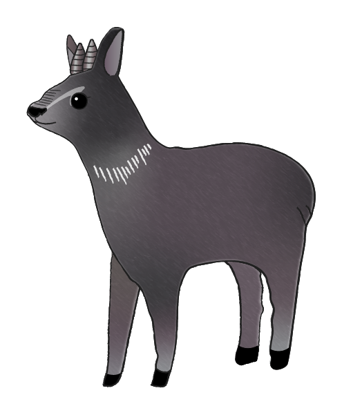
산양
산양의 이름은 ‘숲에 사는 작은 양’이라는 뜻을 가지고 있는데 사실 생김새는 양보다 소를 많이 닮았습니다. 물론 크기는 소처럼 크지 않고 다 자라도 송아지보다 조금
크거나 작은 정도입니다.
크거나 작은 정도입니다.
그리고 놀랍게도 지금 산양의 생김새는
2백만 년 전의 산양의 모습과 거의
비슷하다고 합니다. 그래서 산양은
‘살아있는 화석’이라고도 불립니다.
2백만 년 전의 산양의 모습과 거의
비슷하다고 합니다. 그래서 산양은
‘살아있는 화석’이라고도 불립니다.
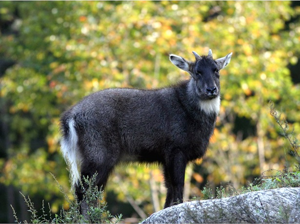

밤하늘의 제왕,
수리부엉이
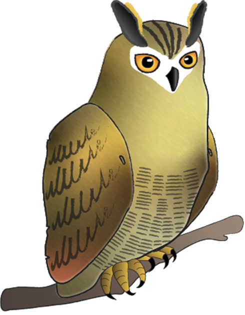
수리부엉이
수리부엉이는 우리나라에 살면서 덩치가 가장 크고 사납습니다. 몸길이가 약 70cm정도이며 날개를 펼치면 2m나 됩니다. 칡부엉이의 두 배가 되는 크기이지요.
그래서 이름에도 맹금류를 나타내는 수리가 붙어 있습니다. 게다가 꿩, 뱀, 고라니 새끼, 삵 그리고 같은 맹금류들 까지 사냥하는 명실상부한 밤하늘의 제왕입니다.
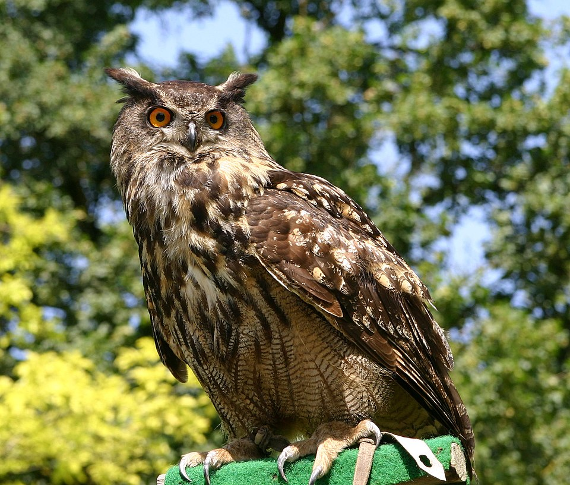

건강한 생태계의 증인,
담비
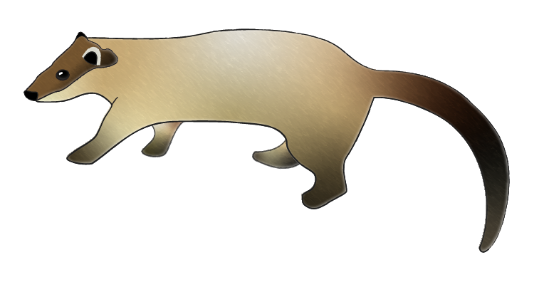
담비
현재 우리나라에서 발견되는 담비는 노란목도리담비가 대표적입니다. 먹이는 나무열매를 비롯해 작은 동물도 잡아먹고 때때로 협동으로 고라니나 멧돼지를 사냥하는 경우도 있습니다.
생태계의 포식자로서 담비가 살고 있다면 그 숲은 다른 야생동물도 살 수
있는 건강한 숲이라는 의미입니다. 하지만 담비는 고급 모피로 애용되어 왔고 이 때문에 멸종위기종이 되었습니다.
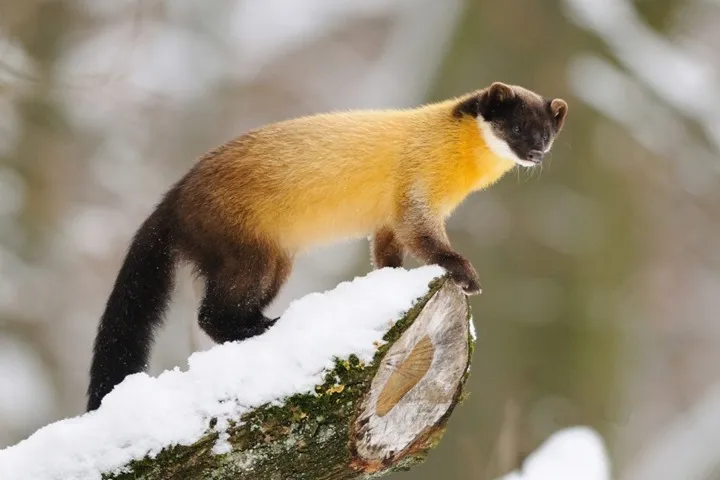

최고의 향기 탓에 사라져가는
사향노루
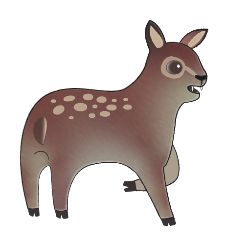
사향노루
세계 3대 천연향료들 중 하나가 바로 사향노루 수컷의 생식기 분비선에 있는 주머니인 사향입니다. 또한 3대 한의약재로도 쓰입니다. 이런 이유로 사향노루는 멸종 위험에 처해있습니다.
사향노루는 인간의 끝없는 욕심 때문에 수백년이 넘는 세월동안 위협을 받고 사라질 위기에 처해있습니다. 그리고 지금은 전쟁이 만들어준 통제된 DMZ라는 특수한 공간속에서 겨우겨우 살아가고 있습니다.
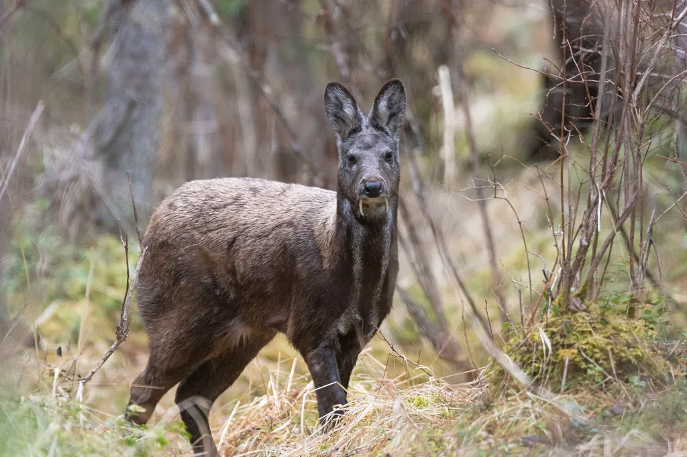

물속에 탑을 쌓는
어름치
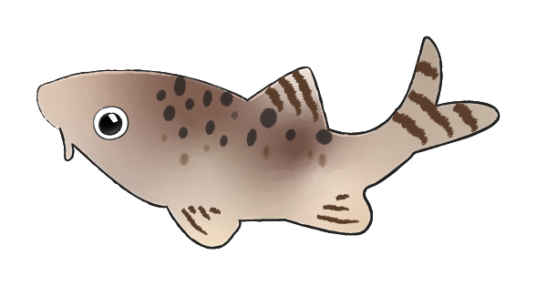
어름치
우리나라에는 호랑이 무늬를 가지고 있는 특산종 민물고기 어름치가 살고 있습니다. 어름치는 우리나리 '국보급' 민물고기로 중요하고 매력적인 물고기입니다.
어름치라는 이름은 어름치의 온몸을 덥고 있는 무늬가 물 밖에서 쳐다보아도 어른거린다 해서 어름치가 되었다고 합니다.
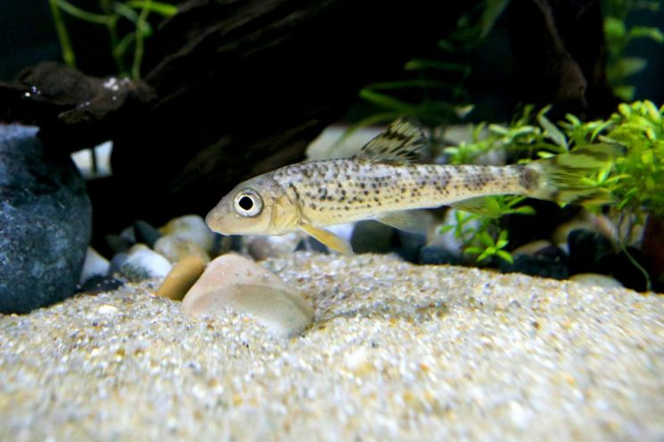
지리산으로 온걸 환영해!
반달가슴곰
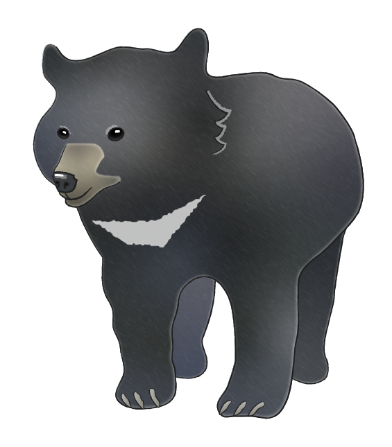
반달가슴곰
반달가슴곰은 우리나라에서는 DMZ일원을 제외하면 절멸한 것으로 추정됩니다. 따라서 우리나라에서는 6마리 방사를 시작으로 복원사업에 열중하고 있습니다.
방사된 곰들은 해외에서 들여온 녀석들로 흔히 우수리종으로 불리는데, 우리나라 토종 반달가슴곰과 같은 유전자형을 지닌 녀석들입니다. 현재 지리산에 살고 있는 반달가슴곰은 34마리로 알려져 있습니다.
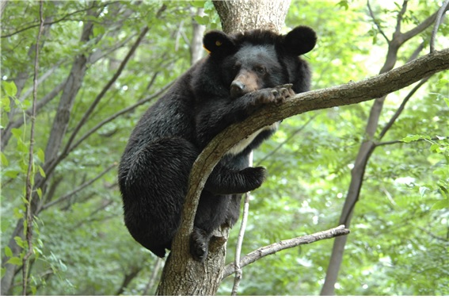
사치스러울 정도로 아름다운
호사비오리
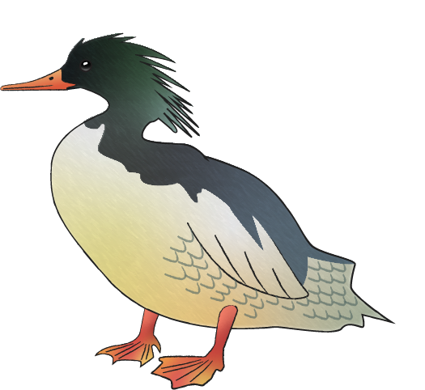
호사비오리
호사비오리는 아름다운 외모 때문에 '호사스럽다'고 불립니다. 오리과의 비오리들 중 한 종류인 이 새는 전 세계적으로 희귀한 멸종위기종으로 외모가 참 근사한 것으로 유명합니다.
옆구리 쪽에 자리 잡은 반달무늬가 특별하며, 머리카락을 멋지게 뒤로 넘긴 것 같은 댕기가 인상적입니다. 그리고 붉은 부리와 그 끝의 노란 점은 마치 예쁜 립스틱을 곱게 바른 것 같습니다.
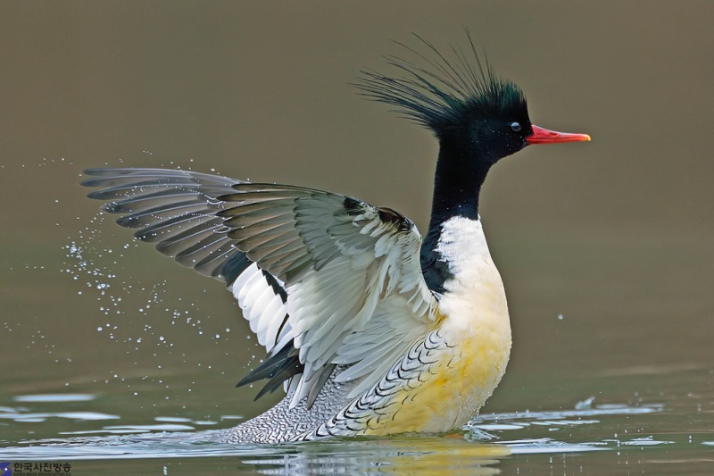
천년 전설의 주인공
두루미
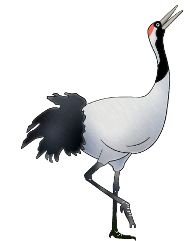
두루미
순우리말인 두루미는 학이라고도 불립니다. 지구상 두 번째로 큰 새로 추운 겨울을 우리나라에서 보냅니다. 그리고 전 세계에서 약 1500마리 정도만 있는 국제적 멸종위기 동물입니다.
두루미라는 이름은 ‘뚜름뚜름’ 하는 두루미의 울
음소리에서 왔다는 설이 가장 일반적입니다. 우리 조상은 예로부터 두루미를 새 중의 신선이라고 여겼습니다.
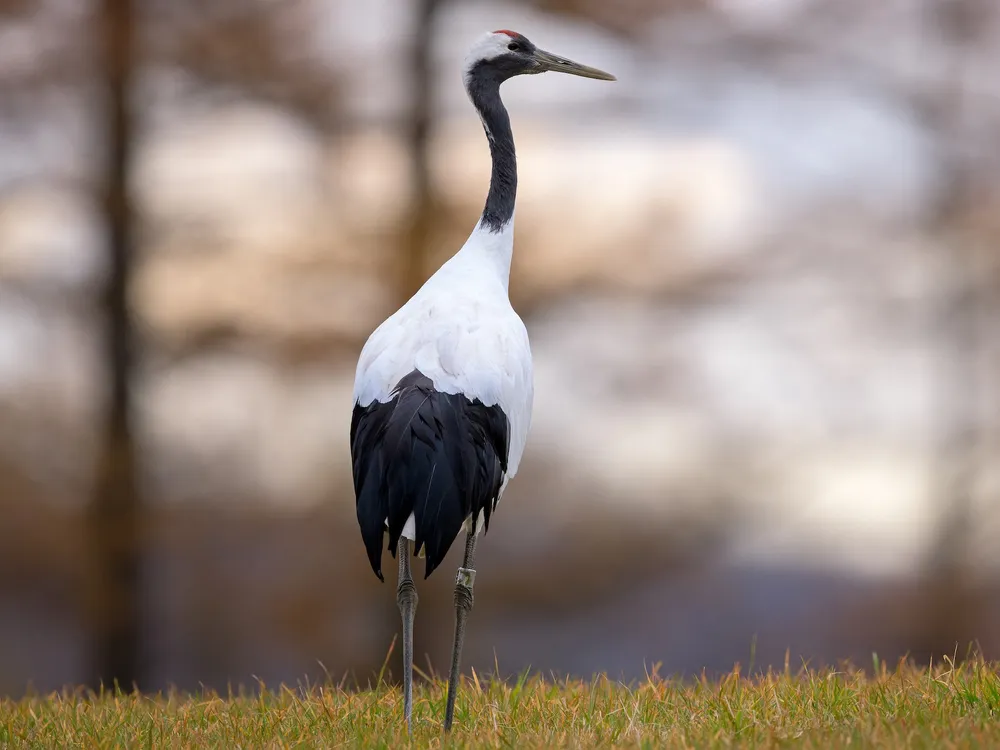
앞으로도 계속 만나고 싶은
점박이 물범
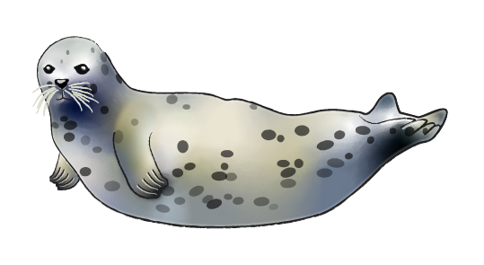
점박이 물범
점박이물범은 회색에서 황갈색 바탕에 검은색과 흰색 점무늬가 있습니다. 마치 사람의 지문처럼 옆머리의 점무늬로 각각을 구별할 수 있습니다.
몸은 부드러운 털로 뒤덮여 있는데,1년에 한 번 이상 털갈이를 해야 방수와 보온 기능을 유지할 수 있습니다. 점박이물범은 8000마리에서 현재 600마리 안팎으로 줄며 위험한 지경에 처해 있다고 합니다.
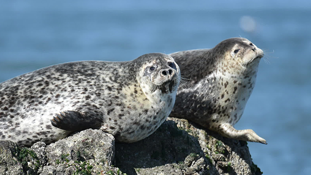